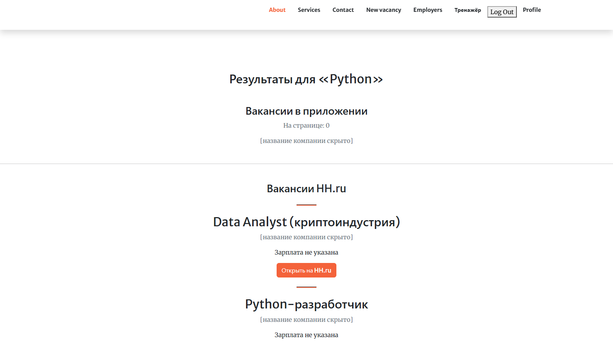
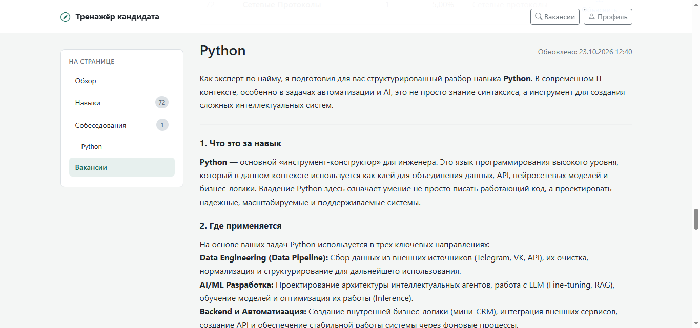
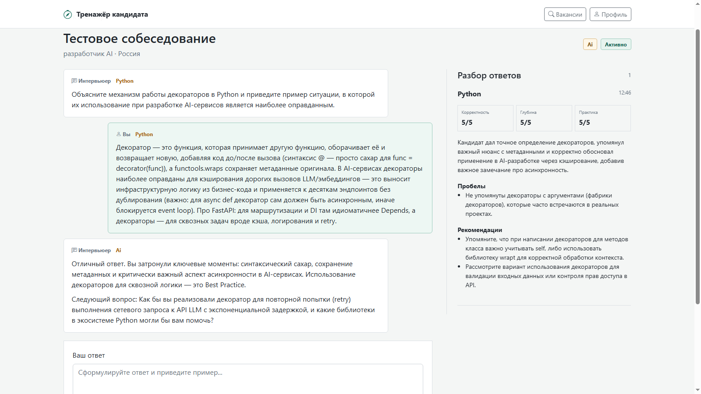
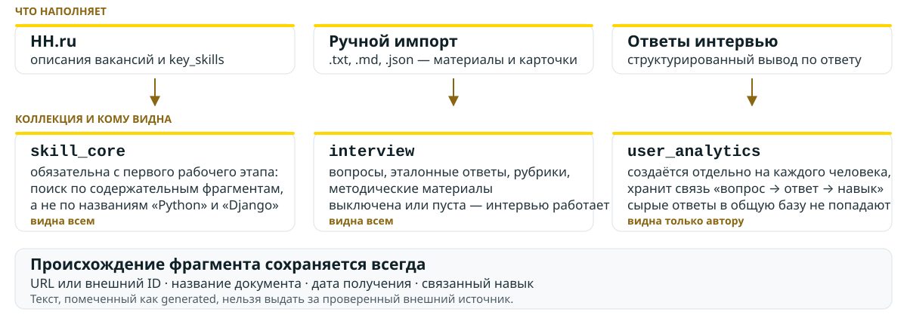
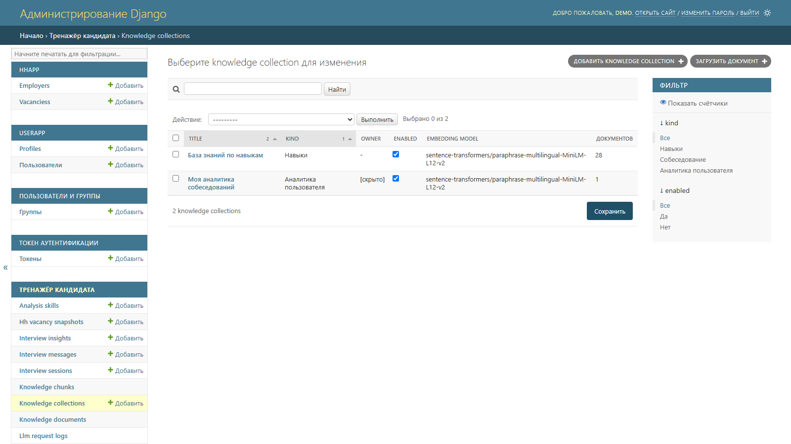
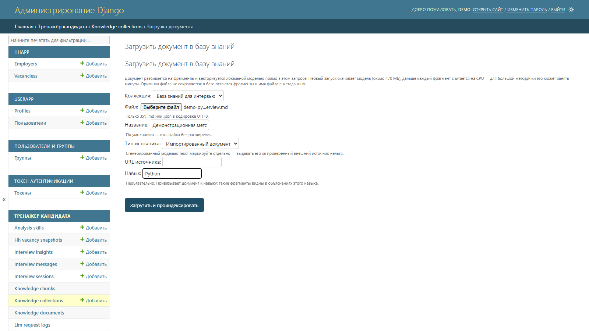
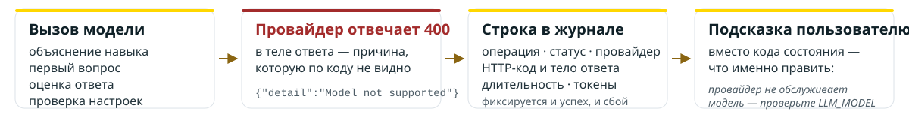
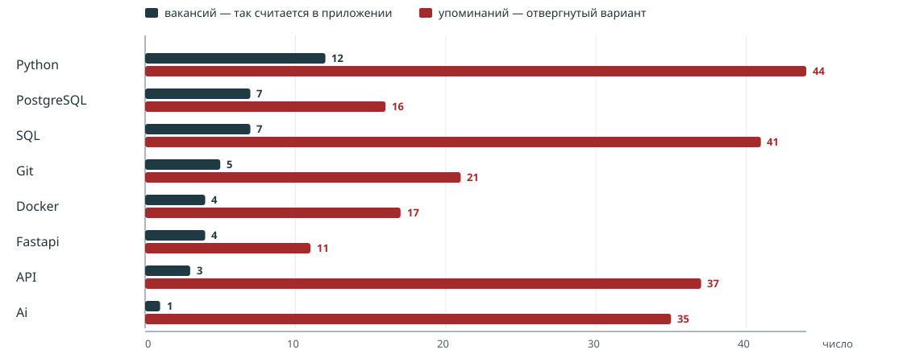
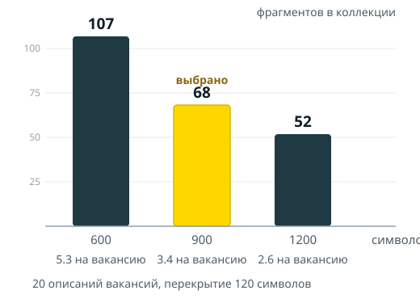
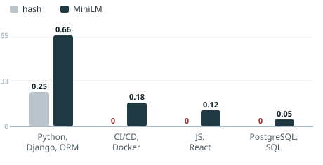

Что уже было в проекте
- Платформа HH_Django: публичный поиск вакансий через официальный HH.ru API
- REST API на DRF, админ-панель, шаблонный web-интерфейс
- PostgreSQL в Docker Compose, production-конфигурация: Gunicorn и Nginx
- Своя модель пользователя
userapp.WebSiteUser
Чего не было: приложение находило вакансии, но не помогало понять, что в них на самом деле требуется и как подготовиться.
Существующая платформа HH_Django


Задача: что должен решать модуль
20 найденных вакансий — это 20 разных описаний. Соискателю нужно:
| Сценарий | Что даёт |
|---|---|
| Анализ требований | какие навыки реально требуют и в скольких вакансиях — а не сколько раз слово встретилось в тексте |
| Объяснение навыка | разбор с опорой на найденные фрагменты источников, с указанием, чего в контексте не хватает |
| Тестовое собеседование | диалог с вопросами по профилю навыков и разбор ответа по явной рубрике |
Границы работы
Делаем
- отдельное приложение
candidate_trainer - интеграцию: маршруты, ссылки авторизации, общие настройки
- доступ к анализу, интервью и аналитике — только по авторизации
- хранение HH ID и деталей внешних вакансий
Не делаем
- не переписываем
hhappиuserapp - не меняем публичный поиск на главной странице
- нет тарифов, платежей, подписок и лимитов
- никакой независимой от Django SQL-схемы — только ORM и миграции
Личный вклад: новый код целиком в одном приложении; из старого проекта
затронут единственный файл — settings.py, блок настроек «Candidate trainer».
Архитектура модуля
локальная embedding-модель на CPU
hh_client · normalization · analysis ·
embeddings · knowledge · knowledge_import ·
prompts · llm · llm_log · interview
| Группа моделей | Сущности |
|---|---|
| Анализ | VacancyAnalysis, HHVacancySnapshot, Skill, AnalysisSkill |
| База знаний | KnowledgeCollection, KnowledgeDocument, KnowledgeChunk |
| Интервью | InterviewSession, InterviewMessage, InterviewInsight, SkillExplanation |
| Наблюдаемость | LLMRequestLog — журнал обращений к модели |
Две миграции: 0001_initial и 0002_llmrequestlog · связи с пользователем — через settings.AUTH_USER_MODEL, а не через строку с идентификатором
Поток анализа вакансии
Что сохраняем
- источник, название, работодатель, URL, дата
- описание и структурированные
key_skills - канонический навык и варианты его написания
Что учитываем
- пустой или слишком короткий запрос
- недоступность HH API и таймаут отдельной карточки
- отсутствие описания или
key_skills - дубликаты вакансий и повторный анализ того же запроса
Регион передаётся в HH API отдельным параметром area,
а не подставляется в строку поиска. Повторный анализ того же запроса не идёт в сеть.
Интерфейс модуля candidate_trainer


Объяснение навыков и тестовое собеседование


RAG: три коллекции знаний

- Сгенерированное моделью помечается
generated— его нельзя выдать за проверенный источник - Поиск — точное косинусное сравнение: при этом объёме данных векторный индекс не нужен
Управление базой знаний


Модель как подключаемый компонент
Настройки, а не код
LLM_PROVIDER,LLM_MODEL,LLM_BASE_URLLLM_MAX_TOKENS,LLM_TIMEOUT,LLM_TEMPERATURE- адаптер поверх OpenAI-совместимого API: смена провайдера — правка окружения
Что решает не модель
- поиск вакансий и нормализация навыков
- права доступа и сохранение состояния
- ограничение контекста: 5 фрагментов вместо всего документа
Данные, а не инструкции: вакансии HH, импортированные документы и сообщения пользователя могут содержать указания для модели — это учитывается, текст из внешнего источника не считается доверенной командой.
Рубрика оценки ответа: корректность · глубина · практическое применение · пробелы · рекомендации. Качество, полученное только от модели, не называется объективным.
Права доступа и приватность
- Весь раздел тренажёра закрыт для гостей:
@login_requiredна каждой точке входа - Чужой анализ не отдаётся даже по прямой ссылке — владелец проверяется в сервисе, а не только в интерфейсе
- Незавершённый анализ не показывается
- Коммерческих тарифов и лимитов нет — доступ определяется только авторизацией и владением
- Ключи API не попадают в текст ошибок и не выводятся в логи
Пользовательская аналитика приватна. Чтобы перенести материал в общую базу знаний, нужны согласие пользователя, очистка персональных данных и отдельная проверка качества — автоматически этого не происходит.
Надёжность и обработка ошибок
Обрабатываем
- 8 собственных типов ошибок вместо общих исключений
- сбой одной вакансии не роняет весь анализ
- причина сбоя сохраняется в базу, а не теряется
- ошибка модели не портит историю сессии
- ответ провайдера сохраняется в журнал и переводится в подсказку
- понятное сообщение вместо трассировки: «миграции не применены»
- ключ доступа не попадает ни в текст ошибки, ни в журнал
Не сделано — следующий шаг
- страницы 404 и 500
- очередь задач: для MVP достаточно синхронного запуска с явным статусом анализа
- автоматическая реакция на сбой: повтор и уведомление — разбор пока ручной
Что видно оператору: журнал и база знаний

Журнал обращений к модели
- пишется каждый вызов: операция, статус, длительность, токены
- при сбое — HTTP-код и тело ответа провайдера
- полей под текст промта и ответ модели нет
- ошибка записи не роняет основную операцию
База знаний из браузера
- методичка загружается формой в админке:
.txt,.md,.json - тот же путь, что у команды
import_knowledge - текст фрагмента закрыт от правки: без пересчёта вектора он разошёлся бы с ним молча
- оригинал файла не хранится
Строка из реального прогона: check | error | http: 400 | model: … | 4797 ms · журнал: /admin/candidate_trainer/llmrequestlog/ · разбор: docs/stage6_report.md
Исследование: как получены числа
- Все замеры сделаны прогонщиком — management-командой
run_experiment, а не ноутбуком - Шесть экспериментов: частота навыка ·
top-k· размер фрагмента · модель векторов · промт объяснения · рубрика оценки - Каждый вариант — отдельный раздел с результатом и выводом; блок сохраняется флагом
--out - Базовый прогон: 20 вакансий, «Python-разработчик», Москва, 57 навыков
Почему не ноутбук: прогонщик вызывает те же функции, что работают в интерфейсе, поэтому расхождение между отчётом и приложением невозможно по построению. Ноутбук был бы второй реализацией того же пайплайна, которую нужно поддерживать параллельно.
Сырые блоки всех прогонов: docs/stage4/ · разбор: docs/stage4_report.md
эксперимент 1Как считать частоту навыка

Итог: при подсчёте по упоминаниям позицию меняют 56 навыков из 57. «api» и «ai» — подстроки внутри FastAPI, OpenAPI и обычных слов, поэтому навыки набирают упоминания, которых у них нет.
Вывод: частота считается по числу исходных вакансий, содержащих навык. Разные написания одного навыка собираются в колонку «варианты написания» — без подстрочных совпадений.
Источник: docs/stage4_report.md, §6.1 · сырой блок: docs/stage4/experiment_frequency.md
эксперименты 2–3Параметры поиска по базе знаний
Сколько фрагментов отдавать модели
| № | Фрагмент | k=3 | k=5 | k=8 |
|---|---|---|---|---|
| 1 | Python-разработчик | 0.5929 | 0.5929 | 0.5929 |
| 3 | Python (LLM/AI) | 0.5342 | 0.5342 | 0.5342 |
| 5 | Senior python (AI-агенты) | — | 0.5244 | 0.5244 |
| 6 | Разработчик python / PgPL | — | — | 0.4724 |
| 8 | Python developer | — | — | 0.4399 |
Между 5-м и 6-м — разрыв 0.5244 → 0.4724.
Дальше фрагменты того же типа: промт растёт, новых сведений нет.
Первые три почти дублируют друг друга, поэтому k=3 слишком узок.
Выбрано: 5 (для интервью — 4: контекст уже, диалог сфокусированнее).
Размер фрагмента

При 600 фрагмент обрывается на середине мысли, при 1200 в один
фрагмент попадают требования из разных блоков вакансии.
Выбрано: 900 при перекрытии 120.
Источник: docs/stage4_report.md, §6.2–6.3 · сырые блоки: experiment_top-k.md, experiment_chunk-size.md
эксперименты 4–6Модель векторов, промты, лимит ответа
| Что сравнивали | Результат | Выбор |
|---|---|---|
| Модель векторов |
 |
MiniLM, 384 |
| Промт объяснения | v1 — 6 635 символов, есть раздел «Ограничения»; v2 — 8 298 символов | v1 |
| Рубрика оценки | оба варианта дали одинаковые баллы 3 / 2 / 3 — промт меняет объяснение, а не оценку | v1 для кандидата |
| Лимит ответа модели | 1200 и 1600 — ответ обрывается на полуслове; 4000 — укладывается целиком | 4000 |
Смена модели векторов требует явной переиндексации: иначе в одной коллекции смешаются векторы разных моделей, и поиск перестанет работать.
Источник: docs/stage4_report.md, §6.4–6.7 · обрывы ответа сохранены файлами: docs/stage4/experiment_prompt-explanation-max1600.md и -max1200.md
Что выбрано по итогам экспериментов
| Параметр | Выбрано | Отвергнуто | Где закреплено |
|---|---|---|---|
| Частота навыка | по числу вакансий | по числу упоминаний | AnalysisSkill.vacancy_count |
top-k для RAG | 5 | 3 — узко, 8 — шум | services/interview.py |
| Размер фрагмента | 900 / перекрытие 120 | 600, 1200 | services/knowledge.py |
| Модель векторов | MiniLM, 384 | hash | EMBEDDING_PROVIDER |
| Промт объяснения | v1 | v2 — оставлен как режим плана | services/prompts.py |
| Рубрика оценки | v1 | v2 — журнал обоснований | services/prompts.py |
| Лимит ответа модели | 4000 | 1200 и 1600 | шаблоны окружения |
Каждый выбор закреплён не в отчёте, а в коде или в настройках — эксперимент закончился изменением проекта.
Ограничения исследования
- Числа получены на одном наборе: 20 вакансий, «Python-разработчик», Москва. Другой запрос может дать иные значения — серия повторяется прогонщиком.
- Качество текста модели оценивалось просмотром ответов, а не формальной метрикой. Баллы рубрики — оценка самой модели и не объявляется объективным результатом.
- Сравнение моделей векторов — микробенчмарк на четырёх фразах: он показывает разницу в качестве, но не заменяет переиндексацию коллекции.
- Замеры лимита ответа — по одному прогону на значение: модель недетерминирована, воспроизводится факт обрыва, а не точные длины в символах.
Это границы выводов, а не дефекты: каждый пункт расширяется тем же прогонщиком на другом запросе или вторым прогоном.
Тесты и воспроизводимость
90 тестов в 10 файлах
| анализ вакансий | 9 |
| команды прогонщика | 23 |
| клиент LLM и журнал обращений | 24 |
| база знаний и импорт документов | 16 |
| интервью | 7 |
| представления и доступ | 5 |
| нормализация и клиент HH | 6 |
Как проверяется
python manage.py check
python manage.py test
python manage.py makemigrations --check --dry-run- в тестах нет реальных запросов к HH.ru, провайдеру LLM и Hugging Face: подставные объекты, фикстуры и тестовый провайдер векторов
- демо-выгрузка: 8 вакансий, 36 навыков, 120 фрагментов, 2 готовых объяснения — просмотр без ключей и без сети, пользователь
demo / demo1234
Что показываю вживую
В терминале
./run_local.sh migrate
./run_local.sh check_llm
./run_local.sh run_analysis_demo "Python-разработчик" --area 1
./run_local.sh run_experiment frequencyАнализ 20 вакансий: таблица навыков с числом вакансий и вариантами написания. Эксперимент: сравнение двух способов подсчёта частоты. Проверка модели оставляет строку в журнале.
В браузере
- вход и переход в
/trainer/ - запрос «Python-разработчик» и регион Москва
- анализ → таблица навыков
- «Объяснить навык» → текст с источниками
- «Начать собеседование» → вопрос, ответ, разбор по рубрике
- журнал обращений: строка последнего вызова модели
- загрузка методички в базу знаний из админки
Если сети или токена HH нет: показываю на демо-выгрузке —
loaddata demo_analysis, вход demo / demo1234, готовый анализ
открывается без ключей и без обращений к HH.
Итоги
- Сделано: AI-модуль в существующем Django-проекте — анализ 20 вакансий, поиск по базе знаний, объяснение навыков, тестовое собеседование с рубрикой оценки
- Исследование: шесть экспериментов и замер лимита ответа; каждый выбор закреплён в коде или настройках
- Воспроизводимость: прогонщик вместо ноутбука, 65 тестов без внешних запросов, демо-данные для проверки без ключей